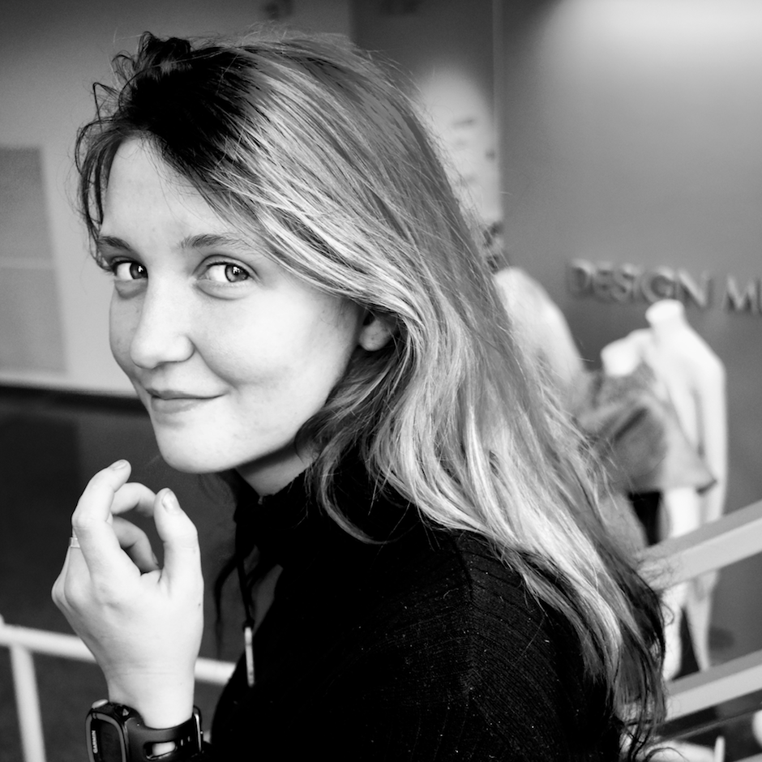
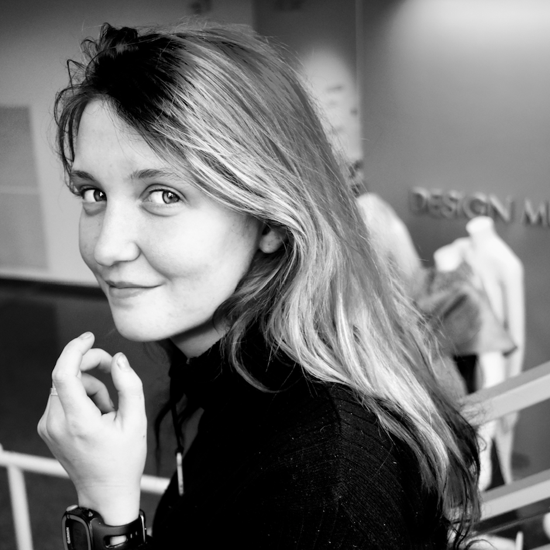

We are a multi-disciplinary club that seeks to unite student from varied backgrounds in pursuit of design learning and excellence. Hosting both large and small events on and off campus, we work to connect current students with alumnus, design professionals, and resources and prepare them to step out confidently into the working world.
The UC Davis Design Career Club aim to empower students to take bold risks, not only in their design, but in their career aspirations. We provide three main events each year: Internship each Fall, Alunmi Networking Day each Winter, and the Design Career Fair each Spring.


 
